カテゴリ: ビーチコーミング
-
ひさしぶりの材木座BC
ひさしぶりに浜歩きいたしました。 天気は上々、気温も丁度良い感じ。 波にほんろうされる笹の葉のようなサーファーがひらひら。 波間のタイムカプセルに乗って会いに来てくれた陶片たち。 青磁ってやっ…

-
材木座 初ひろい
正月早々材木座に行ってきましたっ！ 超超超ちょお久しぶりの鎌倉ビーチコーミングです。 正月に鎌倉へ出るのは混雑もありそうでちょっと心配だったのだけど、駅さえ出てしまえば 海方面には特に混雑もなく気分は…

-
鹿のつの☆ひろう
あちこちで、ご心配おかけしておりますがー 元気に引越ちゃくちゃく準備中ですのでご安心くださいー。 山で鹿の角をひろいました。欠けているものだけど、なかなかの存在感。
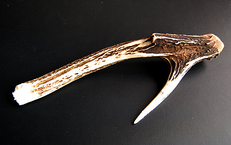
-
磯あそび
すっかり海とご無沙汰のようですが。 それでもちょこちょこ行ってます。でもビーチコーミングとゆーか磯遊び。 ひみつの磯場を発見し、お弁当持って探検してます。 いえ、ぜんぜんひみつでもなんでもないけど。…
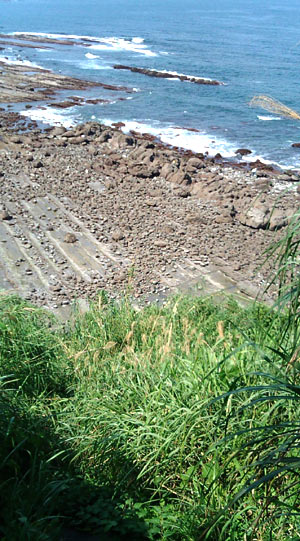
-
これもわすれた時間
会社の近くのいつもの浜に行ってみる。 猫増殖中。ナデナデにゃーん わらわらテトラポットの隙間から出てくる！ なんだなんだ！フナムシの進化形か？？！！ ちょっと陶片もあった。 シーモンキ…
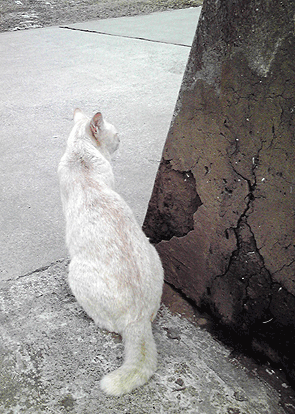
-
えーと忘れてますが
ちょっと仕事の隙間に鎌倉に行ったのですが… あれ？いつだったかな。 しばらくバタバタしていたから、写真もろごと忘却のかなた。 でも、とにもかくにもグリーン車に乗ってお茶をのんで、ツナむすびを食べながら…
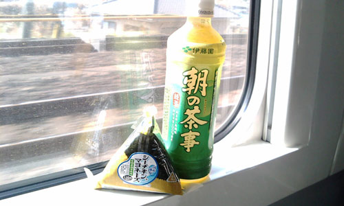
-
拾った陶片
あれこれかわいいのが多いー。 青磁もあれこれ。 また出光美術館の陶片室行かなきゃ。
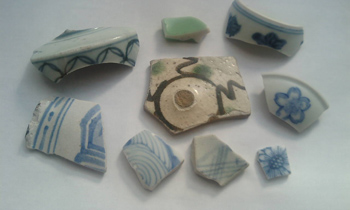
-
ちょっと鎌倉いけたのでした
書類ぱたぱた作って仕事たたんで横須賀線に。 なんだか電車が故障。 先頭4両電気がつかないみたい。大船で車両変更。上り電車を急遽下りに変更して対処したみたい。そーゆーこともあるんだー。ちょっとびっくりし…
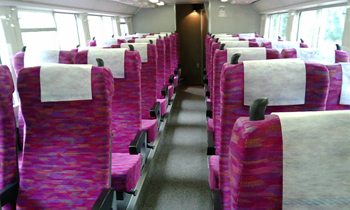
-
いろいろひさしぶり
休日出勤の会社。 窓から海を見てたらいてもたってもいられなくて、ばたばた仕事を折りたたんで、いつも（？）の浜へ。 もちろん、浜歩き用の靴なんて履いていないからハダシで駆け出すのでした。 ほんのり暖…
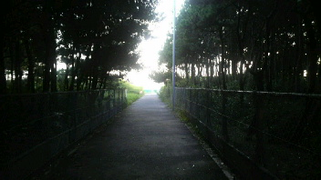
-
出光美術館の陶片室
流浪のわたくし。 ただいま再び関東に出張中。 暑いですなー。週末は時間をもらえたので、丸の内にある出光美術館に陶片を見に。 現在の出光美術館はルオー展で盛り上がっているのだけど、んもう陶片すごくてルオ…

-
青磁の鑑定結果
博物館から青磁の鑑定結果が出ましたー。 以下報告いただいたメールを要約いたしましたー。 【象嵌の入ったもの】 時期：12～13世紀 青磁の種類：高麗青磁 原型：おそらく合子 ※北部九州では出土も多い…

-
おおきい漂着
こんな大きな漂着物は初めてです。 漂着物って言うのかなー？ 座礁船です。なんかクレーンをつんでいるみたい。手前に傘をさしている係員（？）がいるのだけど 比較すると…大きいでしょ？ どうなっちゃうのか…

-
最近の浜事情
雨やら出張やらバス旅やらで浜を歩いていない今日このごろー。 浜辺のガンマン 雨か殺人光線的紫外線日和かで、浜あるきにはちょいと辛い時期ですなー。。。 そんなこんなの浜の出会い。ちょい渋好みな…

-
博物館
青磁をみてもらおうと、博物館にメール。 早々に「詳しい者に見て貰うので、お持ちください」とお返事いただいて、博物館に行ってまいりました。 とりあえず、お預かりとゆーことで、担当の方にお渡しして、ちょ…

-
はるの陶片
サクラガイひろいの最中みつけた、サクラガイのような陶片 かわいい！ で、ほんもののサクラガイはこれだけ貯まりました。 まだまだ… そのほかの陶片などはこんなかんじです～

-
青磁きらきら
青磁に恵まれた一日でしたー。 象嵌の入った青磁と陰刻の入った青磁。 陰刻の入ったものは水飴のような透明感。 こういうものは陶片だと断面がよく分かっていいですねー。 ほんのすこし彫ったあとに釉薬が溜まっ…
-
はるうらら
サクラガイがたくさんひらひら 普段あまり気にしていなかった近場の浜だけど、この日はなかなか好みな陶片もあったり。 しかしもののみごとにツメタガイに食べられちゃっているサクラガイばかり。 ちょっとひと瓶…

-
さいきんの海での遭遇
ひるまにすごーく潮が引くようになりましたねー。 これからが楽しい季節だけど、こちらは直射日光下きびしい季節となってまいりました。 仕事前に自転車飛ばして浜に行って、帰ってくるとゆーことをしばしば。 …

-
つかのまのはま
ここだけの話… 有休代休合計が60日こえましたーぎゃー つかのまの代休取得 まずはいつものとこ なんか変な骨発見 なんだろー？恐い骨じゃないよねー？20センチぐらいの大きい骨です。 ここではこんなか…
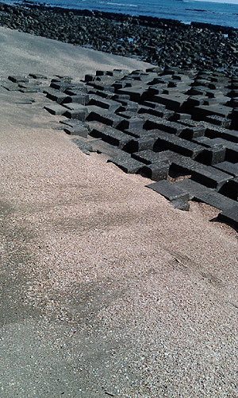
-
でかせぎー
1週間関東に出稼ぎ？にでておりましたー。 さてさて引き続き、謎の青磁。 薄い溝が入っております。お皿だったのかしらん？ また週末に海にでかけてまいります！

-
干潮時の開拓地
本日も開拓地へ。今日は先週と比べてだいぶ潮が引くのでちょいと楽しみに出かけてまいりました。 そんな本日の出会いはこんなかんじ。 統制陶器はじめて拾いましたー 真ん中の陶片は椀蓋かな。障子と庭っぽい図…

-
開拓中
陶片ポイントを探して海岸開拓中 薄ーーーい五弁花（たぶん）発見。 左下は青磁。断面は気泡多めのコンクリートをコーティングしたような感じ。いままで知っている青磁とちょっと違います。。。 鶴亀のおめでたい…

-
こっち初完品瓶
消波ブロック？の隙間で発見。わーい！ 瓶底に「SSS」のエンボス。 うーん。 お宝はあるのね！波が荒いトコなので、瓶は無理かと思っていたので嬉しさひとしおー。 これで我が家のインク瓶は3つになりまし…
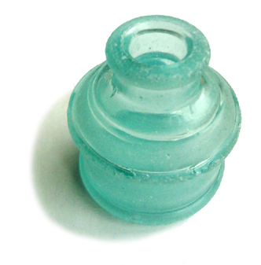
-
青磁青白磁白磁
だいぶ青磁がたまったので、ひとつの瓶に収納することに しかし、いただきものがほとんどだわー。感謝 青磁も時代で色合いや艶が違うのがおもしろい。 断面図。 良い青磁はおいしそう。
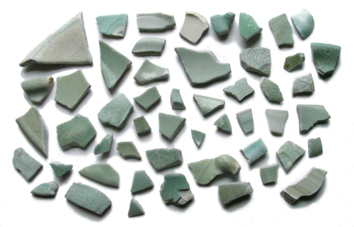
-
ひろいぞめ
正月早々風邪を引いたりしております。 ハナずるずるのひろいぞめです。 細かなものをぽつぽつと。 ３連休は南下してみようかなーと。

-
拾いおさめ
こちらでの拾い納めはこんなかんじ どうも、私が通っている陶片がある浜は、もう私が拾い尽くした感じが… 資源の枯渇。重要な問題です。。。 上部の白いものはIDEALと書かれた化粧瓶のかけら。 貝、カ…

-
ここさいきんのたのしみ
やっぱり浜あるき 海って透明なんですねー。当たり前だけど。 陶片が海の中にあるのが見えるのだけど、それがまた趣があって、 拾わずにじんわり見てしまうのでした。 にしても、なんでここはこんなに印判手の…
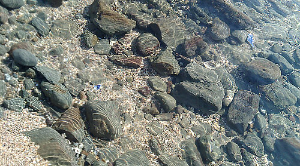
-
ぽつぽつ
どこへたどりついたかとゆーと やっぱり浜辺なのでした。 塩だか胡椒瓶発見。すこーし銀化してましたー。 まあるい貝殻がたくさん。 よくわからない謎の樹脂。 清楚な陶片。 ほお紅色の二枚貝 ち…
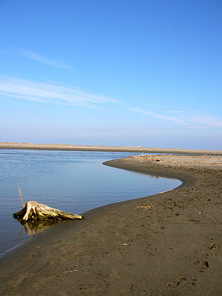
-
ひさびさ鎌倉さよなら鎌倉
「もしやこれは行けそう？？」とバタバタ仕事を折りたたみ、ぎゅうぎゅう圧縮して、週末を迎えることができましたー。 奇跡的。 急な鎌倉訪問にもかかわらず、MAKOTOさんとりえさんが、急遽開催された（？…
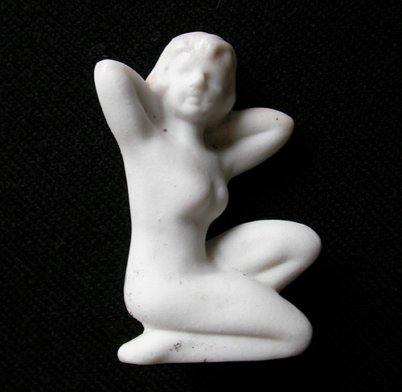
-
ただいまー
無事帰国いたしましたー。 まずは浜報告。今回の旅行で1箇所だけ浜あるきをしてみたのでした。 南オーストラリア州のアデレードにあるグレネルグとゆー浜。 海の向こうは南極！ なぜかタイラギとイカのタ…
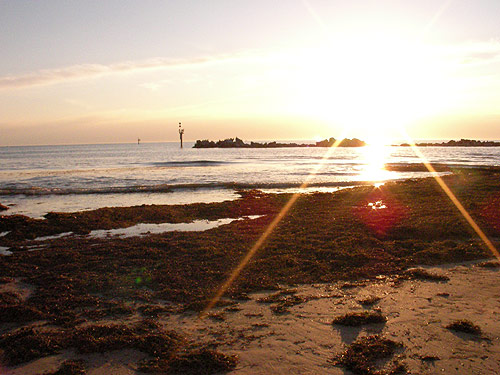
-
いつものはま便り
い…いそがしいので近所の浜で欲求を満たす今日この頃です。 青磁片拾いましたよー。 でも鎌倉と違うのは釉薬がかかっている内側の土の色が真っ白。 鎌倉のはすこぅし墨を混ぜ込んだような色なんだけど。 釉…
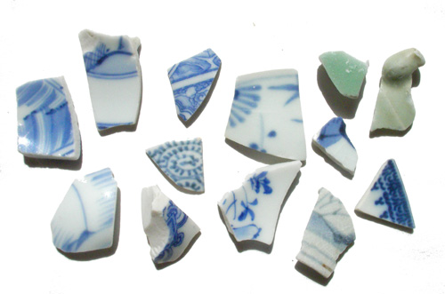
-
かまくら夏の陣
むぉー暑い暑い！ んにゃ…もうこの暑さは…「熱い」ですね。 でもBCの誘惑はこの暑さをも乗り越えて…とゆーことでいざ鎌倉。 が、土曜日の鎌倉は涼しかった～ 曇り空＆たまに雨がちらり。 でも浜は大…
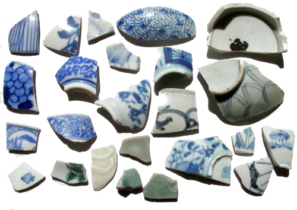
-
こないだかまくら
久々に鎌倉の浜へ。 海の家ずらり並んでびっくりいたしましたー。 最近は海の家でも趣向を凝らしたものが多いのね。 そんなわけで、材木座トコトコ歩いて生ビール。 こーやって適当なとこでビールが飲めるのは…
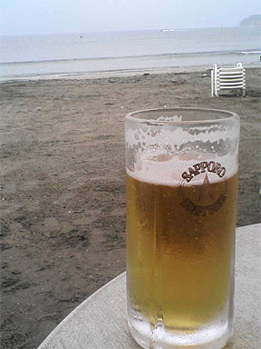
-
りべんじ盤洲干潟
BCをしている夢を良く見るのだけど、こないだ見た夢はざくざく瓶を拾うとゆーなんとも景気の良い夢だったのでした。 あー瓶拾いたいなぁ～…と、瓶好きなワタクシ。 そーいや盤洲干潟をちゃんと歩いてないな…

-
あわただBC
なんだか忙しい6月です…7月になれば鎌倉に行けるー…と思ったけど、その頃には浜は満員御礼状態になっちゃうのかしらん。。。 でも、仕事のあいまにいつもの浜に行けるからどうにか。 会社の引越しでまた少し…
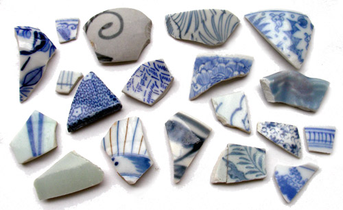
-
浜にいけません
風邪が治らなかったり、会社が引越ししたりで、なかなか浜に行けず… しかたがないので、夕方仕事帰りにいつもの浜に。 これからの時期昼間は暑いし、夕暮れどきのほーが、いいのかな～…と思いきや、 おもっきし…
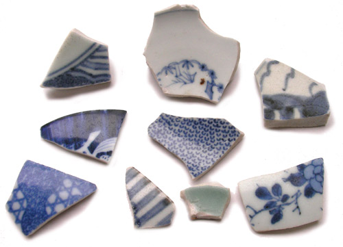
-
ピンセットパワー
そんなこんなで ピンセットデビュー戦 暖かくなって賑わっているいつもの浜へ。 ふふふ。なんだかプロフェッショナル！な感じですよー。 シオフキ狩りで浜がほじくりかえされているせいなのか… やはりピ…

-
ひさしぶりの陶片
陶片拾いは久しぶり（宮崎では貝殻天国だったから） 染色体模様の茶碗は母が（また今回もファミリーBCなのでした）「コレいらない…」と言ったのをもらったのでした。ひひひ。 見込みに「花」も、ちょっとウキウ…

-
BCフルコース
今日はBC会合のお誘いをいただき、鎌倉に。 ぬおー！風強い！！ 風に遊ばれてフラフラ浜を歩いて本日の出会いはこちら 瓶はちょびっと肩のとこが欠けてます。でもどんな瓶でも拾うと嬉しいのでした。会合で…
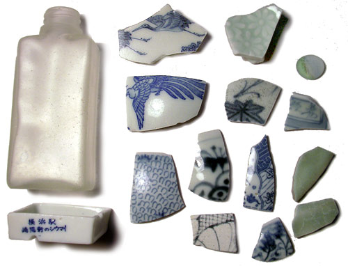
-
いろいろと…
溜め込んでしまいました… まとめです。 まずは近所の浜。 近所の浜で初めて五弁花拾いました。 波間で転がっていて、「あ！五弁花！」とザブッと波に足を突っ込んで拾い上げました。コンニャク印判の五弁…
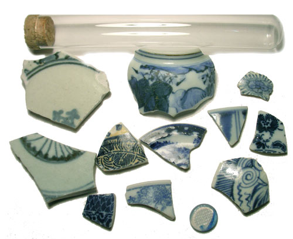
-
キャンドル
こないだ謎干潟で出会った謎蓋。 まえに鎌倉でこれと同じ小さいものと出会っていたので… 家で眠っていた小さいキャンドルを削って溶かして流しこんじゃいました。 着火前 着火後 芯が無かったのでティッ…
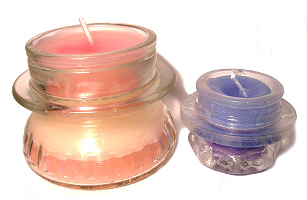
-
謎探検
今日は例のドーナッツ池こと「浸透実験池」の探検。 駅弁は「やきはま弁当」。もぐもぐしながら巖根駅へ。 どういうわけか、何の確信もないままズンズン進んでしまうのが 私のいいとことゆーか悪いとこであって…
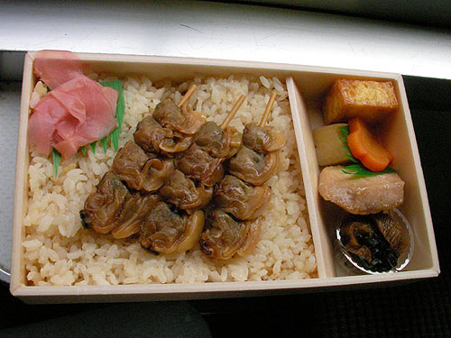
-
最近出会った不思議系
森の妖精は森に帰ったと聞いてましたが…海にいましたよー。 直径30cmばかりのライト？？ 何の照明なのかしらん？海草のお友達を連れていましたー。 ROLEXの箱。 中身があればよかったのですが…

-
こんなのできました
先日の鎌倉BCで、ちょうど半分に割れた陶片と出会ったのでした。 モミジ模様のなかなかカワイイ陶片（なぜか脚付き。茶碗ではないし…なにかしらん？） 家に帰ってから、フォトフレームに目地材を流し込み、陶片…

-
ふたたびファミリーBC
前回のファミリーBC後、母が叔母に陶片を見せたところ、叔母も「私も行きたい！連れてって！」…ということに。 やっぱり遺伝なのかしらん？ ウチの叔母と母は、普通のツアー旅行に突っ込んでも珍道中になる…

-
そういえば
こんなものを拾っていたのを忘れてました。 由比ガ浜で拾った「エンゼル」と書かれたおはじき。 ミルクに抹茶を注いだよーな美味しそうなおはじきです。

-
あつい
今日はものすごく暑かったですねー。 こんな季節の変わり目、温度変化が激しいと熱出したりしてしまうのですが、そんな中、竜宮城に行ってきました。 …と言っても亀に連れられて行ったとこではなく木更津の竜宮城…

-
暫定版妖精
我が家の一角。古いカメラとBCで拾ったガラス物、大きめ陶片なんかが転がっています…と、撮影をしたら妖精のお仲間が…というのは冗談で、 ほっかむり奥様の首を転がしておくのがしのびなく、暫定版で胴体作成い…

-
ファミリーBC
先週、最近こんなことしてるんだ～…と、わが母上に陶片の写真をメールしたところ 「私も拾いたい！連れてって！」と。 そんなわけで母＆妹と鎌倉の浜へ。 ちなみに母上の口癖は「うれぴー！」です。 ヒトデ…

-
不思議な陶片
この陶片、実は海で拾ったものではないのです。 で、どこで拾ったかとゆーと、近所の公園。 踏みしめられた土の道にタイルのようにはまっていたのでした。 とはいえ、そんな新しい陶片ではなさそう。 （という…

-
雪！
本日は鎌倉へ。 雪ですよ～！さむーい！！！ （でもなぜか寒中水泳をしている人を見た…パンツいっちょで泳いでたけど…しかも若くはなさそうな感じの男性が…） こないだ来たときには暖かくって…というか暑か…

-
忙しかった
今週は年度末らしい忙しさ。 なので昼は浜に出てました。自転車で5分ぐらいの場所なのです。 浜でお弁当食べて、ちょろっと浜を歩いて陶片さがし。 一週間のうち3日ほど行ってみつけたもの。 見込みに山水図…

-
煌き
鎌倉で拾った銀化瓶（写真は表裏）。 もってかえって、漂白して、2日乾かしたら煌きだしました。 海の底で煌きを育んでいたのかと思うと、いったいどれだけの時間がこの煌きに重ねられているのかしらん？…と、…

-
いざ鎌倉そのろく
そのほかに、鎌倉というと桜貝と、宝貝なのでした。 ちょこっと貝溜まりにしゃがみ込んで、お土産に拾ってみました。 でも小さい。爪の先ぐらいのホントーに小さい宝貝。でも生まれてはじめて宝貝を拾ったのでした…

-
いざ鎌倉そのご
びんびんびん…瓶をこんなに拾えるとは思ってもいませんでした。 真ん中にある瓶は、底に「素の味」と書かれていました。どうやら味の素が売り出されたばかりの、明治時代の瓶みたい。 一番奥左手の瓶は銀化してま…

-
いざ鎌倉そのよん
「高砂」と書かれたなんともお目出度いお猪口。 お祝いの席で使われたりしたのかしらん？ どういうわけか、文字の書かれた陶片が好き。でも達筆すぎて読めないことが多いんだけど。

-
いざ鎌倉そのさん
と、歩いていたら、「陶片ですか？」と声をかけられたのでした。 「これをあげましょう」と青磁を！ 鎌倉は青磁が有名なのだけど、どれが青磁がわからなかったので、グッドタイミングで先生あらわる！という感じで…

-
いざ鎌倉そのに
銅版転写、型紙摺り にしても鎌倉の陶片はさまざまな時代まんべんなく陶片があって楽しい。 いつもの近所の浜では「ラッキー！」と思われるものが、そこかしこに。 最初はもう嬉しくって拾いまくり、陶片祭りだ…

-
いざ鎌倉そのいち
陶片素人の私が、幕末以前ではないかと思われる陶片あれこれ。 右上方面にあるやる気のない微塵唐草が好き。

-
にしても
ここ最近は浜歩きしている夢ばかりを見ているのだけど、さすが夢だけあって、陶片がザクザク見つかったり、ガラス瓶がゴロゴロ転がってたりとゆーウハウハな夢ばかり。 でも鎌倉はその夢のよーな場所でしたわ。 詳…

-
海がちがう
大きなサザエが転がってるなー…と思ってひっくり返したら真っ赤なヤドカリが！ なんかちょっと塩茹でにしたら美味しそうなかんじだったけど食べられるのかしらん？

-
本日は遠征
18きっぷで鎌倉まで。

-
朝あるく
波が荒かったり、雨が降ったり、大潮だったりで、 ちょいと海が気になって出社前に浜歩きしてきました。 朝の海岸歩きって、なんだか余裕のある生活って感じだわ。 それにしても女ひとり海岸歩きは怪しいのか、…

-
大潮でした
いつもなら小さな欠片となってしまった陶片が多い海岸なのに大潮のせいか、大きな陶片と出会いました。 左下は「くらわんか碗」18世紀ごろになるのかな。 「飯食らわんか酒食らわんか」と食べ物飲み物を売って…

-
うみ
昔からひとりほったらかしにしておくと、あちこち歩いたり、隙間に入ったり、穴にはまってみたりするのが好きなのだけど。 なんかここ最近、そこに行くことに必然性を感じることが。 場所に呼ばれる…とゆーよー…

-
ほんじつも陶片
ただいまビーチコーミング蜜月月間。 なので本日も自転車こいで浜まで。昨日風が強かったから面白いものあるかなーと思ったけど。普段どおりとゆー感じでしたわ。 松、竹、梅に鹿模様と花札のよーですわ。 とこ…

-
こんかいのであい
当初予定では、5キロちょっと歩いて～途中お弁当食べて～… …とオマケ付きピクニック程度に考えていたのだけど、 なんだかんだで12キロほど歩くことに。 今回のよき出会いは、この湯飲み茶碗かな。 手書き…

-
エーゲ海あるき
2年前にギリシャに行ったときに拾ってきた石。 こうやって写真撮ると立派なポストカード風だわ。 来年の年賀状にしようかな（気が早い…） こんなチョコレートもあったよーな… にしてもやっぱり日本の海岸…

-
はまあるき(3)
小さな陶片ばかりですが… でも、こんな欠片に歴史があるとゆーのはロマンですね。

-
はまあるき(2)
ビーチコーミング2回目。 要領を得て色んなもの拾えましたよー。 緑色の菊模様の陶片。青いシーグラスなんかも。 …で、熊発見。 グミじゃないですよ。ガラス製の熊です。 グミのよーなクマなので名前はハリボ…

-
はまあるき(1)
我が家から自転車を20分ほど走らせると海なのです。 最初は貝殻とかシーグラスを拾っていたのだけど、なぜか急に陶片に目覚めたのでした。 若い頃、テレビで陶片を集めている人を見て 「なんで割れたものを集…